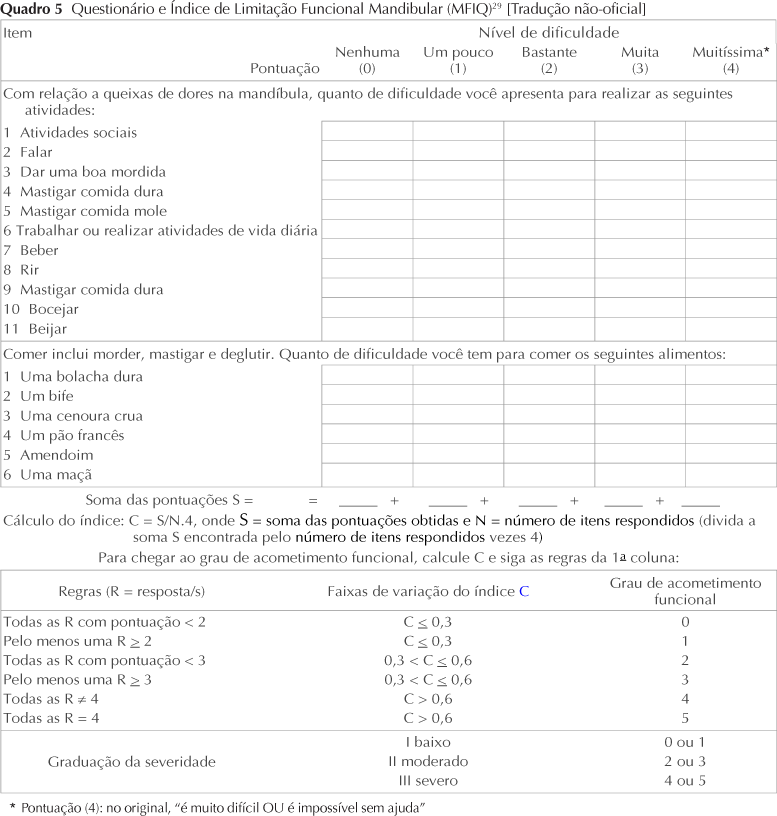

Essa aplicação foi criada no intuito de ajudar as pessoas conseguirem usar o RDC (Research Diagnostic Criteria for Temporomandibular Disorders)
e o MFIQ (Mandibular Function Impairment
Questionnaire) com mais facilidade e eficiencia, para que consiga um resultado de DTM mais rápido e preciso.
Calculadora MFIQ
A calculadora MFIQ foi desenvolvida com base no questionário bastante usado para saber a limitação funcional mandibular.

Lista RDC
O RDC/TMD (Research diagnostic criteria for temporomandibular disorders, Critérios diagnósticos para pesquisa em DTM)
é um dos poucos instrumentos que define critérios operacionais para o diagnóstico clínico.
Nesta aplicação o RDC foi dividido em duas partes, a da direita e da esquerda.